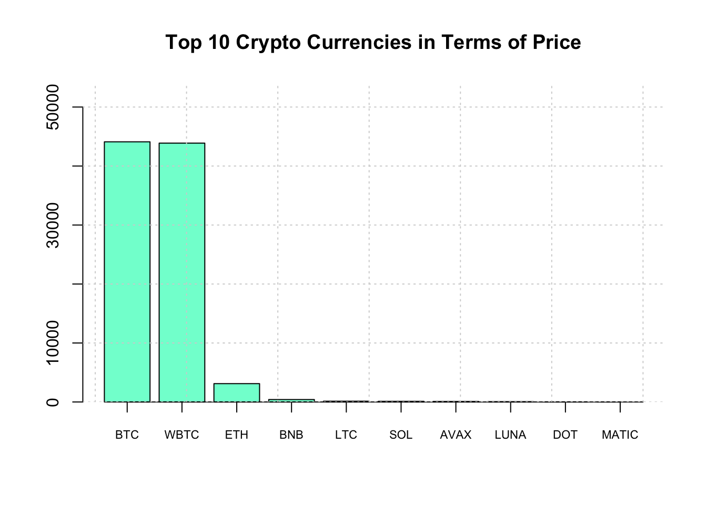

Chapter 3 More Real Life Examples
Okay. This is a tour of some sites that will serve as important examples on how to parse sites. Let’s check the price of bitcoins. You want to be rich don’t you ?
3.1 BitCoin Prices

The challenge here is that it’s all one big table and it’s not clear how to adress it. And the owners of the web site will ususally change the format or start using Javascript or HTML5 which will mess things up in the future. One solid approach I frequently use is to simply pull out all the tables and, by experimentation, try to figure out which one has the information I want. This always require some work.
library(rvest)
url <- "https://coinmarketcap.com/all/views/all/"
bc <- read_html(url)
bc_table <- bc %>%
html_nodes('table') %>%
html_table() %>% .[[3]]
# We get back a one element list that is a data frame
str(bc_table,0)## tibble [200 × 1,001] (S3: tbl_df/tbl/data.frame) bc_table <- bc_table[,c(2:3,5)]
head(bc_table)## # A tibble: 6 × 3
## Name Symbol Price
## <chr> <chr> <chr>
## 1 BTCBitcoin BTC $43,023.30
## 2 ETHEthereum ETH $3,055.21
## 3 USDTTether USDT $1.00
## 4 BNBBNB BNB $416.09
## 5 USDCUSD Coin USDC $0.9995
## 6 XRPXRP XRP $0.8144Everything is a character at this point so we have to go in an do some surgery on the data frame to turn the Price into an actual numeric.
# The data is "dirty" and has characers in it that need cleaning
bc_table <- bc_table %>% mutate(Price=gsub("\\$","",Price))
bc_table <- bc_table %>% mutate(Price=gsub(",","",Price))
bc_table <- bc_table %>% mutate(Price=round(as.numeric(Price),2))
# There are four rows wherein the Price is missing NA
bc_table <- bc_table %>% filter(complete.cases(bc_table))
# Let's get the Crypto currencies with the Top 10 highest prices
top_10 <- bc_table %>% arrange(desc(Price)) %>% head(10)
top_10## # A tibble: 10 × 3
## Name Symbol Price
## <chr> <chr> <dbl>
## 1 WBTCWrapped Bitcoin WBTC 43062.
## 2 BTCBitcoin BTC 43023.
## 3 ETHEthereum ETH 3055.
## 4 BNBBNB BNB 416.
## 5 LTCLitecoin LTC 132.
## 6 SOLSolana SOL 112.
## 7 AVAXAvalanche AVAX 84.1
## 8 LUNATerra LUNA 56.4
## 9 DOTPolkadot DOT 21.3
## 10 MATICPolygon MATIC 1.89Let’s make a barplot of the top 10 crypto currencies.
# Next we want to make a barplot of the Top 10
ylim=c(0,max(top_10$Price)+10000)
main="Top 10 Crypto Currencies in Terms of Price"
bp <- barplot(top_10$Price,col="aquamarine",
ylim=ylim,main=main)
axis(1, at=bp, labels=top_10$Symbol, cex.axis = 0.7)
grid()
So that didn’t work out so well since one of the crypto currencies dominates the others in terms of price. So let’s create a log transformed verion of the plot.
# Let's take the log of the price
ylim=c(0,max(log(top_10$Price))+5)
main="Top 10 Crypto Currencies in Terms of log(Price)"
bp <- barplot(log(top_10$Price),col="aquamarine",
ylim=ylim,main=main)
axis(1, at=bp, labels=top_10$Symbol, cex.axis = 0.7)
grid()
3.2 IMDB
Look at this example from IMDb (Internet Movie Database). According to Wikipedia:
IMDb (Internet Movie Database)[2] is an online database of information related to films, television programs, home videos, video games, and streaming content online – including cast, production crew and personal biographies, plot summaries, trivia, fan and critical reviews, and ratings. We can search or refer to specific movies by URL if we wanted. For example, consider the following link to the “Lego Movie”: http://www.imdb.com/title/tt1490017/

In terms of scraping information from this site we could do that using the rvest package. Let’s say that we wanted to capture the rating information which is 7.8 out of 10. We could use the xPath Tool or the Selector gadet tool to zone in on this information. According to selector gadget we have the following xpath expression:

url <- "http://www.imdb.com/title/tt1490017/"
lego_movie <- read_html(url)
# Scrape the website for the movie rating
rating <- lego_movie %>%
html_nodes(".ratingValue span") %>%
html_text() So that gives us what we need albeit in character form. Now it’s a simple matter of parsing out the first rating value:
(rating <- as.numeric(rating[1]))## [1] NAThat wasn’t so bad. Let’s see what using the xPath plugin gives us:

We get a much longer xpath expression which should provide us with direct access to the value.
xp <- "/html/body/div[3]/div/div[2]/div[5]/div[1]/div[2]/div/div[1]/div[2]/div/div[1]/div[1]/div[1]/strong/span"
# Scrape the website for the movie rating
rating <- lego_movie %>%
html_nodes(xpath=xp) %>%
html_text() %>% as.numeric()
rating## numeric(0)Let’s access the summary section of the link. We could use Selector Gadget or the xPath plugin. I’ll use the former.


mov_summary <- lego_movie %>%
html_nodes(".summary_text") %>%
html_text()
mov_summary## character(0)3.3 Faculty Salaries
In this example we have to parse the main table associated with the results page.

Salary

Salary
url <- "https://www.insidehighered.com/aaup-compensation-survey"
df <- read_html(url) %>% html_table() %>% `[[`(1)
intost <- c("Institution","Category","State")
salary <- df %>% separate(InstitutionCategoryState,into=intost,sep="\n")
salary## # A tibble: 10 × 8
## Institution Category State `Avg. SalaryFul… `Avg. ChangeCon… `CountFull Prof… `Avg. Total Com…
## <chr> <chr> <chr> <chr> <chr> <int> <chr>
## 1 Auburn Uni… Doctoral ALAB… $132,600 4.4% 407 $170,300
## 2 Birmingham… Baccala… ALAB… $81,000 0.0% 39 $100,000
## 3 Huntingdon… Baccala… ALAB… $76,700 0.0% 13 $89,500
## 4 Jacksonvil… Master’s ALAB… $77,300 N/A 78 $104,100
## 5 Samford Un… Master ALAB… $105,200 3.2% 130 $133,300
## 6 Troy Unive… Masters ALAB… $84,500 1.6% 30 $88,500
## 7 The Univer… Doctoral ALAB… $151,600 2.0% 300 $205,100
## 8 University… Doctoral ALAB… $139,100 2.8% 191 $164,800
## 9 University… Doctoral ALAB… $126,400 2.0% 64 $169,200
## 10 University… Master ALAB… $80,700 2.1% 47 $106,100
## # … with 1 more variable: Salary EquityFull Professors <dbl>So the default is 10 listings per page but there are many more pages we could process to get more information. If we look at the bottom of the page we can get some clues as to what the URLs are. Here we’ll just process the first two pages since it will be quick and won’t burden the server.
# So now we could process multiple pages
url <- 'https://www.insidehighered.com/aaup-compensation-survey?institution-name=&professor-category=1591&page=1'
str1 <- "https://www.insidehighered.com/aaup-compensation-survey?"
str2 <- "institution-name=&professor-category=1591&page="
intost <- c("Institution","Category","State")
salary <- data.frame()
# We'll get just the first two pages
for (ii in 1:2) {
nurl <- paste(str1,str2,ii,sep="")
df <- read_html(nurl)
tmp <- df %>% html_table() %>% `[[`(1)
tmp <- tmp %>% separate(InstitutionCategoryState,into=intost,sep="\n")
salary <- rbind(salary,tmp)
}
salaryLook at the URLs at the bottom of the main page to find beginning and ending page numbers. Visually this is easy. Programmatically we could do something like the following:
# https://www.insidehighered.com/aaup-compensation-survey?page=1
# https://www.insidehighered.com/aaup-compensation-survey?page=94
# What is the last page number ? We already know the answer - 94
lastnum <- df %>% html_nodes(xpath='//a') %>%
html_attr("href") %>% '['(103) %>%
strsplit(.,"page=") %>% '[['(1) %>% '['(2) %>% as.numeric(.)
# So now we could get all pages of the survey
str1 <- "https://www.insidehighered.com/aaup-compensation-survey?"
str2 <- "institution-name=&professor-category=1591&page="
intost <- c("Institution","Category","State")
salary <- data.frame()
for (ii in 1:lastnum) {
nurl <- paste(str1,str2,ii,sep="")
df <- read_html(nurl)
tmp <- df %>% html_table() %>% `[[`(1)
tmp <- tmp %>% separate(InstitutionCategoryState,into=intost,sep="\n")
salary <- rbind(salary,tmp)
Sys.sleep(1)
}
names(salary) <- c("Institution","Category","State","AvgSalFP","AvgChgFP",
"CntFP","AvgTotCompFP","SalEquityFP")
salary <- salary %>%
mutate(AvgSalFP=as.numeric(gsub("\\$|,","",salary$AvgSalFP))) %>%
mutate(AvgTotCompFP=as.numeric(gsub("\\$|,","",salary$AvgTotCompFP)))
salary %>% group_by(State,Category) %>%
summarize(avg=mean(AvgSalFP)) %>%
arrange(desc(avg))There are some problems:
- Data is large and scattered across multiple pages
- We could use above techniques to move from page to page
- There is a form we could use to narrow criteria
- But we have to programmatically submit the form
- rvest (and other packages) let you do this
3.4 Filling Out Forms From a Program

Salary
Let’s find salaries between $ 150,000 and the default max ($ 244,000)
- Find the element name associated with “Average Salary”
- Establish a connection with the form (usually the url of the page)
- Get a local copy of the form
- Fill in the value for the “Average Salary”
- Submit the lled in form
- Get the results and parse them like above `
So finding the correct element is more challenging. I use Chrome to do this. Just highlight the area over the form and right click to “Insepct” the element. This opens up the developer tools. You have to dig down to find the corrext form and the element name. Here is a screen shot of my activity:

Salary
url <- "https://www.insidehighered.com/aaup-compensation-survey"
# Establish a session
mysess <- html_session(url)
# Get the form
form_unfilled <- mysess %>% html_node("form") %>% html_form()
form_filled <- form_unfilled %>% set_values("range-from"=150000)
# Submit form
results <- submit_form(mysess,form_filled)
first_page <- results %>% html_nodes(xpath=expr) %>% html_table()
first_page3.5 PubMed
Pubmed provides a rich source of information on published scientific literature. There are tutorials on how to leverage its capabilities but one thing to consider is that MESH terms are a good starting place since the search is index-based. MeSH (Medical Subject Headings) is the NLM controlled vocabulary thesaurus used for indexing articles for PubMed. It’s faster and more accurate so you can first use the MESH browser to generate the appropriate search terms and add that into the Search interface. The MESH browser can be found at https://www.ncbi.nlm.nih.gov/mesh/

What we do here is get the links associated with each publication so we can then process each of those and get the abstract associated with each publication.
# "hemodialysis, home" [MeSH Terms]
url<-"https://www.ncbi.nlm.nih.gov/pubmed/?term=%22hemodialysis%2C+home%22+%5BMeSH+Terms%5D"
#
# The results from the search will be of the form:
# https://www.ncbi.nlm.nih.gov/pubmed/30380542
results <- read_html(url) %>%
html_nodes("a") %>%
html_attr("href") %>%
grep("/[0-9]{6,6}",.,value=TRUE) %>% unique(.)
results## [1] "/27061610/" "/30041224/" "/25925822/" "/25925819/" "/28066912/" "/28535526/" "/27545636/"
## [8] "/30041223/" "/26586045/" "/27781373/"
So now we could loop through these links and get the abstracts for these results. It looks that there are approximately 20 results per page. As before we would have to dive in to the underlying structure of the page to get the correct HTML pathnames or we could just look for Paragraph elements and pick out the links that way.
text.vec <- vector()
for (ii in 1:length(results)) {
string <- paste0("https://pubmed.ncbi.nlm.nih.gov",results[ii])
text.vec[ii] <- read_html(string) %>% html_nodes("p") %>% `[[`(7) %>% html_text()
}
# Eliminate lines with newlines characters
final.vec <- gsub("\n","",text.vec)
final.vec <- gsub("^\\s+","",final.vec)
#final.vec <- text.vec[grep("^\n",text.vec,invert=TRUE)]
final.vec## [1] "Pediatric home hemodialysis is infrequently performed despite a growing need globally among patients with end-stage renal disease who do not have immediate access to a kidney transplant. In this review, we expand the scope of the Implementing Hemodialysis in the Home website and associated supplement published previously in Hemodialysis International and offer information tailored to the pediatric population. We describe the experience and outcomes of centers managing pediatric patients, and offer recommendations and practical tools to assist clinicians in providing quotidian dialysis for children, including infrastructural and staffing needs, equipment and prescriptions, and patient selection and training. "
## [2] "Home hemodialysis (HHD) has been available as a modality of renal replacement therapy since the 1960s. HHD allows intensive dialysis such as nocturnal hemodialysis or short daily hemodialysis. Previous studies have shown that patients receiving HHD have an increased survival and better quality of life compared with those receiving in-center conventional HD. However, HHD may increase the risk for specific complications such as vascular access complications, infection, loss of residual kidney function and patient and caregiver burden. In Japan, only 529 patients (0.2% of the total dialysis patients) were on maintenance HHD at the end of 2014. The most commonly perceived barriers to intensive HHD included lack of patient motivation, unwillingness to change from in-center modality, and fear of self-cannulation. However, these barriers can often be overcome by adequate predialysis education, motivational training of patient and caregiver, nurse-assisted cannulation, nurse-led home visits, a well-defined nursing/technical support system for patients, and provision of respite care. "
## [3] "This special supplement of Hemodialysis International focuses on home hemodialysis (HD). It has been compiled by a group of international experts in home HD who were brought together throughout 2013-2014 to construct a home HD \"manual.\" Drawing upon both the literature and their own extensive expertise, these experts have helped develop this supplement that now stands as an A-to-Z guide for any who may be unfamiliar or uncertain about how to establish and maintain a successful home HD program. "
## [4] "Prescribing a regimen that provides \"optimal dialysis\" to patients who wish to dialyze at home is of major importance, yet there is substantial variation in how home hemodialysis (HD) is prescribed. Geographic location, patient health status and clinical goals, and patient lifestyle and preferences all influence the selection of a prescription for a particular patient-there is no single prescription that provides optimal therapy for all patients, and careful weighing of potential benefit and burden is required for long-term success. This article describes how home HD prescribing patterns have changed over time and provides examples of commonly used home HD prescriptions. In addition, associated clinical outcomes and adequacy parameters as well as criteria for identifying which patients may benefit most from these diverse prescriptions are also presented. "
## [5] "Home hemodialysis (HD) was first introduced in the 1960s with a rapid increase in its use due to inability of dialysis units to accommodate patient demand. A sharp decline was subsequently seen with expanding outpatient dialysis facilities and changes in reimbursement policies. In the last decade, with emerging reports of benefits with home HD and more user-friendly equipment, there has been resurgence in home HD. However, home HD remains underutilized with considerable variations between and within countries. This paper will review the history of home HD, elaborate on its established benefits, identify some of the barriers in uptake of this modality and expand on potential strategies to overcome these barriers. "
## [6] "Home hemodialysis (HD) is undergoing a resurgence. A major driver of this is economics, however, providers are also encouraged by a combination of excellent patient outcomes and patient experiences as well as the development of newer technologies that offer ease of use. Home HD offers significant advantages in flexible scheduling and the practical implementation of extended hours dialysis. This paper explores the reasons why home HD is making a comeback and strives to offer approaches to improve the uptake of this dialysis modality. "
## [7] "The home extracorporeal hemodialysis, which aroused a great interest in the past, has not kept its promises due to the complexity and expectations for family involvement in treatment management. In the United States NxStage One portable system was proposed and designed for home use. In this work we describe, starting from the history of home hemodialysis, the method with NxStage system by comparing it with the conventional HD in 5 patients. The dialysis efficiency was similar between the two treatments, even if home hemodialysis showed a reduction in serum urea, creatinine and phosphorus. At the same time phosphate binders use decreased with an increase in serum calcium while hemoglobin increased reducing doses of erythropoietin. The method was successful in the training of the patients and their partners during hospital training and at home. Patients have shown great enthusiasm at the beginning and during the therapy, which is developed around the users personal needs, being able to decide at its own times during 24 hours according to personal needs, in addition to faster recovery after the dialysis. This method certainly improved the patients' wellness and increased their autonomy. "
## [8] "Most hemodialysis (HD) in Japan is based on the central dialysis fluid delivery system (CDDS). With CDDS, there is an improvement in work efficiency, reduction in cost, and a reduction in regional and institutional differences in dialysis conditions. This has resulted in an improvement in the survival rate throughout Japan. However, as the number of cases with various complications increases, it is necessary to select the optimal dialysis prescription (including hours and frequency) for each individual in order to further improve survival rates. To perform intensive HD, home HD is essential, and various prescriptions have been tried. However, several challenges remain before widespread implementation of home HD can occur. "
## [9] "Home hemodialysis (HD) is a modality of renal replacement therapy that can be safely and independently performed at home by end-stage renal disease (ESRD) patients. Home HD can be performed at the convenience of the patients on a daily basis, every other day and overnight (nocturnal). Despite the great and many perceived benefits of home HD, including the significant improvements in health outcomes and resource utilization, the adoption of home HD has been limited; lack or inadequate pre-dialysis education and training constitute a major barrier. The lack of self-confidence and/or self-efficacy to manage own therapy, lack of family and/or social support, fear of machine and cannulation of blood access and worries of possible catastrophic events represent other barriers for the implementation of home HD besides inadequate competence and/or expertise in caring for home HD patients among renal care providers (nephrologists, dialysis nurses, educators). A well-studied, planned and prepared and carefully implemented central country program supported by adequate budget can play a positive role in overcoming the challenges to home HD. Healthcare authorities, with the increasingly financial and logistic demands and the relatively higher mortality and morbidity rates of the conventional in-center HD, should tackle home HD as an attractive and cost-effective modality with more freedom, quality of life and improvement of clinical outcomes for the ESRD patients. "
## [10] "Home hemodialysis (HHD) is emerging as an important alternate renal replacement therapy. Although there are multiple clinical advantages with HHD, concerns surrounding increased risks of infection in this group of patients remain a major barrier to its implementation. In contrast to conventional hemodialysis, infection related complication represents the major morbidity in this mode of renal replacement therapy. Vascular access related infection is an important cause of infection in this population. Use of central vein catheters and buttonhole cannulation in HHD are important modifiable risk factors for HHD associated infection. Several preventive measures are suggested in the literature, which will require further prospective validation. "Well that was tedious. And we processed only the first page of results. How do we “progrmmatically” hit the “Next” Button at the bottom of the page ? This is complicated by the fact that there appears to be some Javascript at work that we would have to somehow interact with to get the URL for the next page. Unlike with the school salary example it isn’t obvious how to do this. If we hove over the “Next” button we don’t get an associated link.